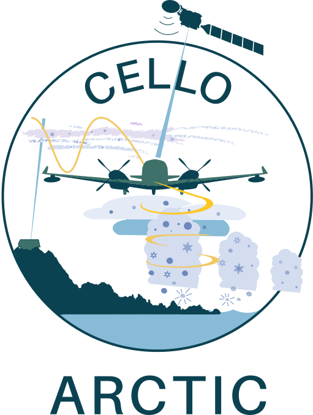

KA-20251009a#
cirrus multi ec_underCrew#
Job |
Name |
|---|---|
PI |
Tim Carlsen |
Instrument operator |
Sorin Ghemulet |
Instrument operator |
Robert Oscar David |
EarthCARE target scenarios
Cirrus: Thin cirrus clouds.
Complex multi-layer scenes: Multiple layers of thin cirrus clouds at different altitudes.
Flight summary
During the research flight on 9th October 2025, we targeted cirrus clouds between 6.7 and 7.9 km altitude underneath EarthCARE (orbit #7758C). We sampled in cirrus clouds at temperatures between -24°C and -32°C. Multiple layers of thin cirrus made it challenging to stay in cloud, and we had numerous altitude changes to sample ice crystals. Directly after the correlative observations under EC, we performed two spirals and sampled similar clouds over the ground-based ACTRIS site at Pallas.
Track#
Flight track for KA-20251009a.#
Flight path (dashed line) superimposed on the MSI-RGR-1C product on 9th October 2025. The ATLID ground track is shown in yellow, while the EC leg (for correlative observations) is shown as a continuous line.
Conditions#
Flight video#
Video cutting and editing in progress…
Events#
Time (UTC) |
Comment |
|---|---|
12:12 |
Takeoff Kiruna |
13:10 |
Start ec_leg |
13:25 |
EarthCARE overpass (orbit #7758C) |
13:53 |
End ec_leg |
14:04 |
Start spiral over Pallas ground-site |
14:33 |
Stop spiral over Pallas ground-sites |
15:06 |
Landing Kiruna |
Execution#
Takeoff KRN: 12:12 UTC (14:12 LT)
12:16 UTC: anti-ice on
12:26 UTC: all cameras on (for a while now)
12:41 UTC: ETA WP1 12:52 @FL270
12:51 UTC: WP1, entering hold
13:00 UTC: one more holding pattern
13:10 UTC: WP1, Start ec_leg
13:11 UTC: WPA
13:13 UTC: descend to FL260 to get more in cloud
13:16 UTC: WPB
13:19 UTC: go down to FL240 when turn @WP2
13:21 UTC: WP2
13:25 UTC: ec_meet
13:30 UTC: request FL220
13:40 UTC: turn a bit earlier already back to WP2, difficult, only thin layers above and below, seen some falling crystals from time to time
13:53 UTC: WP2
14:04 UTC: WP3E, start spiral over Pallas
14:13 UTC: start climb again
14:21 UTC: one more round at FL270
14:32 UTC: one last Pallas overpass, direct hit
14:33 UTC: end spiral, going home
14:52 UTC: Hawkeye off
Landing KRN: 15:06 UTC (17:06 LT)
Impressions#
12:15 UTC: TAS163, 3°C, FL060
12:16 UTC: went through clear low cloud layer, well separated
12:18 UTC: snowing
12:20 UTC: TAS182, -8°C, FL130
12:21 UTC: TAS185, -10°C, FL140
12:23 UTC: Sun on right, TAS194, -15°C, FL170
12:26 UTC: TAS198, -23°C, FL200, some ice in 2DS-H
12:28 UTC: above cloud mostly now, some thin cirrus above us, little ice
12:36 UTC: TAS219, -35°C, FL270
12:41 UTC: TAS227, -35°C, FL270
12:46 UTC: ice again, falling from above
12:48 UTC: TAS228, -35°C, FL270
12:49 UTC: halo circle looks great to the right
12:51 UTC: big Bullet rosettes (B-Rs), TAS230, -34°C, FL270
12:55 UTC: big B-Rs
12:56 UTC: photo towards EC track to the right
13:00 UTC: 2DS sees ice
13:07 UTC: TAS227
13:10 UTC: TAS230, FL270, not in cloud yet
13:14 UTC: TAS244, -32°C, FL260, a little ice
13:15 UTC: TAS230, -32°C, FL260, more ice now
13:17 UTC: 2DS-H and 2DS-V some crystlas, nothing on FCDP
13:18 UTC: TAS227, -32°C, FL260
13:22 UTC: TAS230, -29°C, FL250
13:23 UTC: TAS229, -28°C, FL240, alt capture
13:25 UTC: ec_meet, no crystals
13:27 UTC: some ice in 2DS-H, TAS228
13:29 UTC: difficult, just thin layers around, no crystals
13:30 UTC: TAS240, -27°C, FL240, starting descend, now crystals
13:31 UTC: TAS230, -25°C, FL230
13:32 UTC: TAS225, -24°C, FL220, alt capture
13:35 UTC: TAS227, some crystals, FL220
13:37 UTC: TAS219, no crystals right now, FL220
13:44 UTC: TAS214, -25°C, FL220, some crystals again, back on track now
13:49 UTC: TAS220
13:50 UTC: start going up, -24°C
13:53 UTC: WP2, TAS209, -30°C, FL250
13:55 UTC: TAS213, -32°C, FL260
13:56 UTC: TAS221, -35°C, FL270
14:00 UTC: TAS230, -35°C, FL270
14:01 UTC: some ice now, halo to the left
14:02 UTC: big B-Rs
14:04 UTC: TAS236, -33°C, FL258, see crystals
14:05 UTC: TAS230, -31°C, FL250
14:06 UTC: TAS237, -29°C, FL240
14:07 UTC: TAS226, -28°C, FL230
14:08 UTC: TAS225, -25°C, FL220, strong crosswinds, 60-80 kt, only a few crystals
14:12 UTC: TAS222, -25°C, FL220
14:14 UTC: more crystals now, TAS211, -27°C, FL230
14:16 UTC: TAS209, -29°C, FL240, 70kt crosswind
14:18 UTC: TAS216, -31°C, FL250, few crystals, halo to the front left
14:10 UTC: TAS217, -33°C, FL260, not really anything on probes
14:20 UTC: -34°C
14:22 UTC: TAS220, -35°C, FL270
14:29 UTC: TAS229, -35°C, FL270
14:44 UTC: TAS226, -22°C, FL190, entering ‘the Soup’, but nothing on probes
Instrument status & quicklooks#
Instrument |
Operational |
Comment |
|---|---|---|
FCDP |
✅ |
None |
2D-S |
✅ |
None |
CPI |
❌ |
camera connection issue |
CAS-DPOL |
❌ |
CAPS computer failure |
CIP |
❌ |
CAPS computer failure |
LWC Hotwire |
❌ |
CAPS computer failure |
Gopros |
✅ |
None |